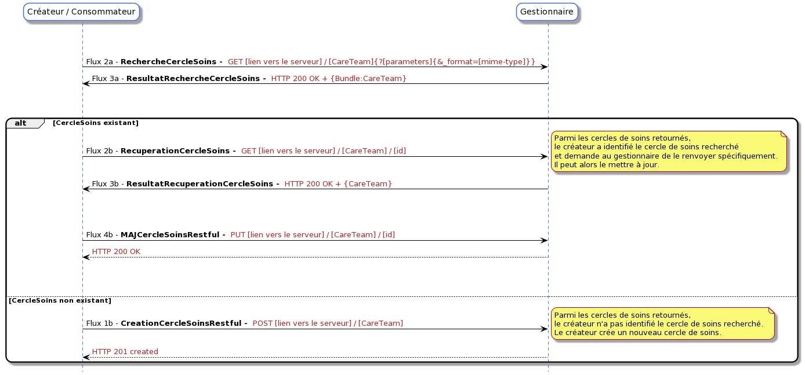

Cercle De Soins
2.0.1 - final-text

Cercle De Soins
2.0.1 - final-text

Cercle De Soins - Local Development build (v2.0.1) built by the FHIR (HL7® FHIR® Standard) Build Tools. See the Directory of published versions
This page includes translations from the original source language in which the guide was authored. Information on these translations and instructions on how to provide feedback on the translations can be found here.
More information on FHIR HTTP requests in the official documentation
https://www.hl7.org/fhir/R4/http.html
The flows for managing resources representing care circle actors are creation and update flows for actors respectively operated by HTTP POST and HTTP PUT requests on the FHIR resources « Patient », « Practitioner », « PractitionerRole », « RelatedPerson » and « Organization »:
The defined RESTful interaction flows are:
These requests are sent to the manager:

If the actor is created correctly, an HTTP 201 created code is returned. If an actor is updated correctly, the management system returns an HTTP 200 OK code.
The flows for managing care circles are defined below:
As indicated in the Functional Specification tab of this guide, the prerequisite for creating a care circle is searching for this care circle. If the care circle does not exist, it is created (flow 1b), otherwise, it is updated (flow 4b):

The flow for creating the « CareTeam » resource is an HTTP POST request based on the FHIR « create » interaction. The « CareTeam » resource constitutes the body of the request. This flow is based on the IHE transaction request « Update Care Team » [PCC-45] of the DCTM profile. If the care circle is created correctly, an HTTP 201 created code is returned.
The flow for updating the « CareTeam » resource is an HTTP PUT request. The « CareTeam » resource constitutes the body of the request. Updating the CareTeam resource requires specifying the logical identifier of the resource to be updated. This flow is based on the IHE transaction request « Update Care Team » [PCC-45] of the DCTM profile. The care circle update should be able to be performed based on the FHIR « update » interaction. If the care circle is updated correctly, the management system returns an HTTP 200 ok code. For information on other HTTP codes (HTTP status codes), consult the documentation related to the update interaction, « update » of the FHIR REST API. When updating the care circle, the manager increments the version number of the resource (Careteam.meta.versionID) and indicates the update date at the level of Careteam.meta.LastUpdated.